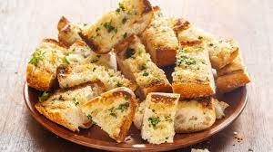

Garlic Bread
Yummy Garlic Bread

Here we are going to make garlic bread.
Ingredients
- Fresh loaf of Italian bread
- 4 Table spoons of salted butter
- 2 cloves of garlic (finely chopped)
- sprig of parsley (finely chopped
Steps
- Melt the butter
- add garlic and parsley to butter
- heat butter mixture until simmer
- brush the sauce onto both pieces of bread
- bake bread at 350 deg F for 10 min
- sprinkle fresh parsley on top
- Enjoy